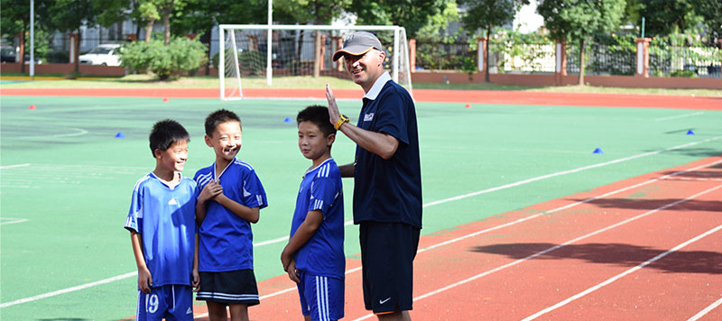
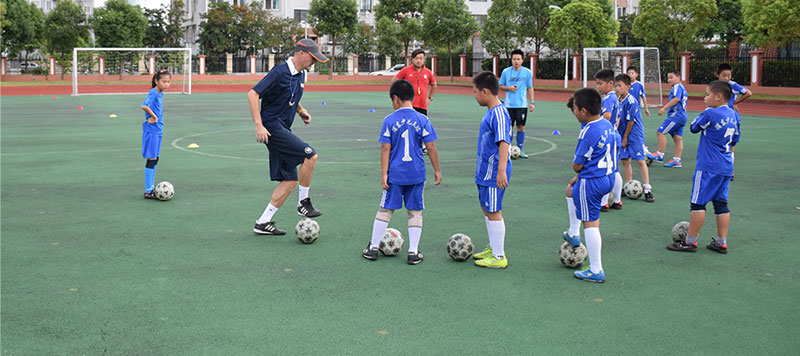
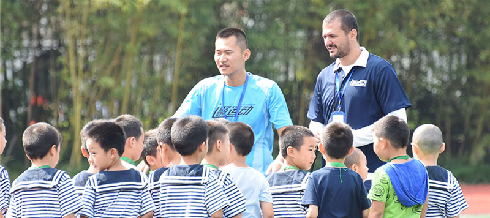
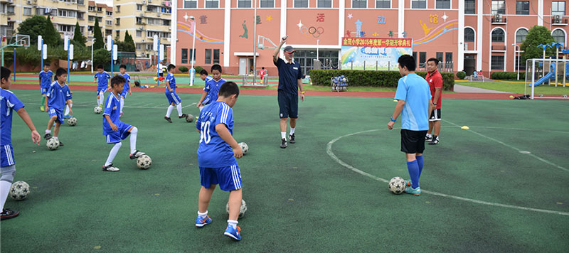
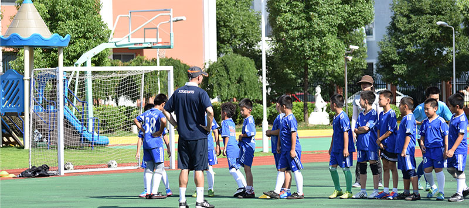
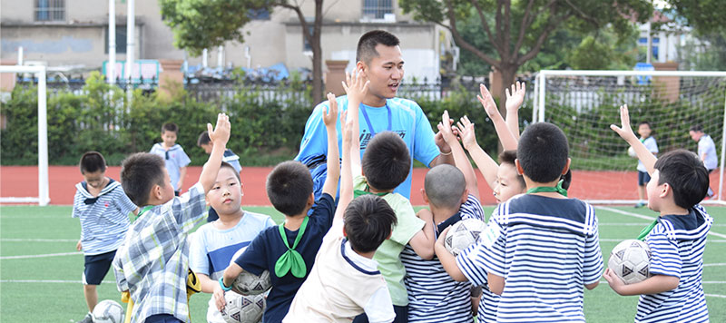

曾经，我们是只有比赛，只有获胜。
竞技场上，胜者欢呼雀跃、笑容灿烂；负者垂头丧气、神情落寞。比赛，是一场战争；比赛，又只是一场游戏。
但，无论输赢，都是一个人成长的过程，都会有人生的收获。
体育最基础也最重要的功能——教育，却几乎被我们遗忘。
如果说体育比赛是浓缩的人生，感悟高潮与低谷、顺境与挫折，短时间内体验一遍人生况味，那么足球就是人生最好的课堂。在这里不仅能强身健体，更能培养一个人的品格，培养他的进取精神，培养他面对再大的挫折也永不言败，面对在强大的对手也要奋勇向前，面对再弱小的对手也要去尊重……
体育有时可以突破一切障碍，这就是体育的特殊之处和其不可替代的价值。
对体育运动的崇尚和热爱，对拥有强健体魄、拥抱健康生活的热切渴望，是古今中西概莫能外的，而体育运动蓬勃发展的现实正是这一全人类共性的最好体现。
但不得不说的是，目前我国青少年体育教育仍是“说起来重要，做起来不要”，许多家长对体育锻炼的理解还停留在“强身健体少生病，对学习成绩提高有帮助”的阶段，仅把体育当作智育的辅助，无疑落了下乘。
“足球是最好的教育。 ”作为中国足坛最著名的球星之一，郝海东说过，“对孩子们来说，足球不只是输赢，也是尊重规则、尊重对手，学会团队合作，甚至学会与他人相处。“
“忠诚、诚实、敢于担当、孝敬父母，这些都是足球教会我的。比赛之外，踢球可以让人懂得很多做人的道理，塑造一个健全的人格。 ”
竞技场上，除了拼个你死我活，还要领会团队精神的重要性，和伙伴们相互协作，相互了解和沟通，每一脚传球，都意味着信任的传递。和对手和伙伴一起，感受人生的每一步，失败的苦涩，成功的狂喜。
体育激励全世界青年人参与到运动当中，正是看中体育在促进人的全面发展上的重要作用。
去年南京青奥会期间，国际奥委会主席巴赫倡议，希望更多学校和家长能把体育看作教育中不可分割的一部分。鼓励青少年按照奥林匹克价值观生活，让体育成为一种生活方式，从青少年开始最合适不过。
从九月开始，聚运动的外教团队就将进驻上海市25所中小学，将欧洲最先进的足球理念带进课堂，将足球和教学有机结合，让足球成为孩子们的生活方式。我们立志要把人生最好的课堂和小伙伴们一起分享。